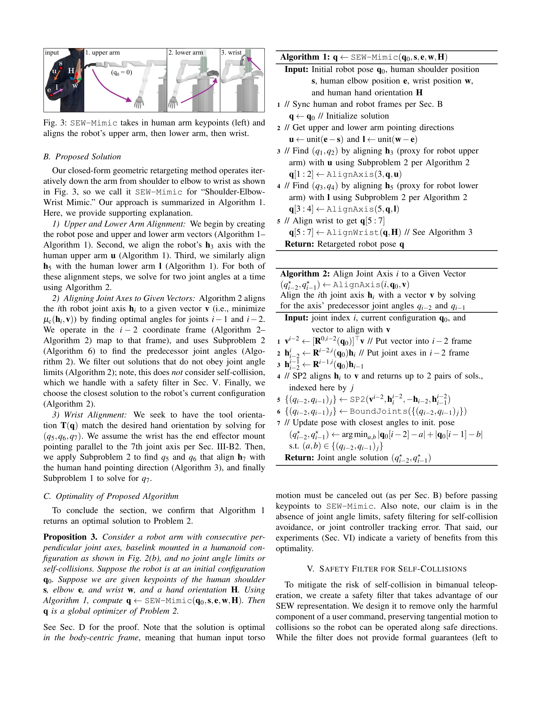

Essence

Fig. 1: We propose SEW-Mimic for retargeting human shoulder, elbow, and wrist (SEW) keypoints analytically to robot
SEW-Mimic은 인간의 어깨, 팔꿈치, 손목(SEW) 키포인트를 7-DoF 로봇 팔의 관절각으로 변환하는 폐형식(closed-form) 기하학적 역운동학 솔버로, 3kHz의 고속 추론과 최적성 보장을 제공한다.
저자: Chuizheng Kong, Yunho Cho, Wonsuhk Jung, Idris Wibowo, Parth Shinde, Sundhar Vinodh-Sangeetha, Long Kiu Chung, Zhenyang Chen, Andrew Mattei, Advaith Nidumukkala, Alexander Elias, Danfei Xu, Taylor Higgins, Shreyas Kousik | 날짜: 2026-02-02 | URL: https://arxiv.org/abs/2602.01632
Fig. 1: We propose SEW-Mimic for retargeting human shoulder, elbow, and wrist (SEW) keypoints analytically to robot
SEW-Mimic은 인간의 어깨, 팔꿈치, 손목(SEW) 키포인트를 7-DoF 로봇 팔의 관절각으로 변환하는 폐형식(closed-form) 기하학적 역운동학 솔버로, 3kHz의 고속 추론과 최적성 보장을 제공한다.
Fig. 1: We propose SEW-Mimic for retargeting human shoulder, elbow, and wrist (SEW) keypoints analytically to robot

Fig. 3: SEW-Mimic takes in human arm keypoints (left) and
총평: SEW-Mimic은 인간형 로봇 텔레오퍼레이션의 근본적 병목(계산 지연, 팔꿈치 제어 불일치)을 폐형식 기하학적 해석으로 우아하게 해결하며, 실증적 성과와 다중 플랫폼 검증으로 실무 임팩트가 높은 기여이다.